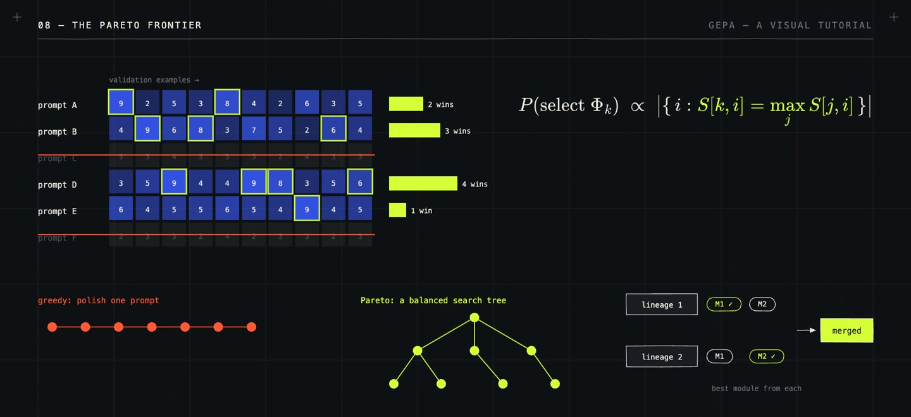

/ 8:32 VIDEO · 2 MIN READ
GEPA and prompt optimization:
learning in language, not weights.
Prompt engineering began as manual work, with people rewriting instructions until a model behaved. In 2022, the Automatic Prompt Engineer (APE) handed that job to a language model. It proposed candidate instructions, scored each on examples and kept the best; on 19 of 24 tasks its instructions matched or beat human-written ones. OPRO (2023) showed the model its past prompts with their scores, ProTeGi and TextGrad had it write critiques of failures, called textual gradients, and DSPy (2023) turned pipelines of model calls into programs whose prompts an optimizer can tune. GEPA (Genetic-Pareto, paper, code) is the latest step on that path.
The role of prompt optimization is to improve a system without touching its weights. Most AI systems are now pipelines of model calls, each with its own prompt. Together those prompts act as the system's parameters, but they are words, so they cannot be trained with gradients, and usually only the final output gets a score.
With \(\Phi\) the system, \(\Pi = \langle \pi_1, \dots, \pi_k \rangle\) its prompts and \(\mu\) a metric comparing an output with its reference \(m\), prompt optimization searches \[\Pi^* = \arg\max_\Pi\; \mathbb{E}_{(x, m) \sim D}\big[\mu(\Phi_\Pi(x), m)\big]\] within a budget of runs. Methods differ in what the proposer sees and in what the search keeps. GEPA's proposer sees the most. It gets full traces of a few runs, plus the text the evaluator produced while scoring, such as compiler errors, failed tests or unmet rubric items. A reflection model reads them, works out what went wrong and rewrites the instruction of one module. GEPA's keeper is a Pareto frontier. For each validation example it tracks which candidates score best, drops candidates beaten everywhere, and picks the next parent in proportion to the number of examples it wins: \[P(\text{select } \Phi_k) \propto \big|\{\, i : S[k, i] = \max_j S[j, i] \,\}\big|,\] where \(S[k, i]\) is candidate \(k\)'s score on example \(i\).

Keeping prompts that are best on different inputs avoids polishing one prompt into a local optimum, and the paper's ablation finds it clearly stronger than always mutating the best candidate. The authors report that GEPA beats GRPO, a reinforcement-learning method that fine-tunes the weights, by 6% on average and up to 20% across six tasks, with up to 35× fewer runs, and beats the DSPy optimizer MIPROv2 by over 10%. A page of feedback carries far more per run than one number. Prompts and weights can also be combined. BetterTogether alternates prompt optimization and fine-tuning and beats either alone.
A prompt cannot add a capability the model lacks, and its lessons must fit in the context window. Much of the budget goes into validation rather than learning, and the step that merges lineages is sensitive to its settings. ACE argues that rewriting prompts again and again also loses detail, and grows an evolving playbook instead.